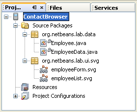

{kind=link}

本教程将向您说明如何使用 SVG UI 小部件为基于 Java ME 的触摸屏设备开发富 UI。随着基于 Java ME 的触摸屏设备（如 Samsung Omnia 和 Instinct、Nokia 5800 Xpress Music 或 Blackbery Storm）数量的快速增长，为这些设备开发应用程序成为任何专业 Mobile 应用程序开发者所必需具备的技能。本教程中创建的应用程序可以在大多数支持用于 J2ME 的 SVG API (JSR226) 的设备上运行，因为非触摸屏设备也支持富 SVG UI 小部件。

要学完本教程，您需要具备以下软件和资源：
| 软件或资源 | 要求的版本 |
|---|---|
| 带有 Java ME 的 NetBeans Beans | 版本 6.9 或更高版本 |
| Java Development Kit (JDK) | 版本 6 或 7 |
| 联系人浏览器示例 | NetBeans 项目 |
| SVG UI 片段 | NetBeans 插件 |
为确保启用 Java ME 功能，我们建议执行 "Custom Installation"（定制安装），并在 IDE 安装过程中取消选中 "Features on Demand"（按需启用功能）组件。
除了上面列出的必需软件以外，您还应在计算机上执行以下安装：
ContactBrowser.zip 文件解压缩到 NetBeans 项目文件夹中。我们将生成一个基于 SVG 的基本应用程序 UI。该应用程序非常简单，但它足以向您说明如何创建新的 Java ME 应用程序，如何将 SVG 图像从 SVG 构成器导入到 Visual MIDlet 中，以及如何在 MIDP 设备仿真器上运行项目。
SVG：JSR-226 指定了用于以 XML 呈现可缩放二维矢量图形的 API。矢量图形仅包含每个像素的绘制说明，而不像 GIF 和 JPG 格式那样对每个像素的内容进行编码。因此，矢量图像具备以下几个优点：
一部分功能完备的 SVG 专用于移动设备，它们被称为 SVG-Tiny，并且 JSR-226 将 SVG-Tiny 配置文件版本 1.1 定为 J2ME 矢量图形的正式文件格式。
通过使用 NetBeans 中的 SVG 构成器和 SVG 窗体富 UI 组件，可以更加容易地创建用户界面。
下面对 SVG 构成器组件面板中提供的 SVG UI 片段进行了概述：
以上内容仅仅是对 SVG UI 富组件的一个简要介绍。有关更多详细信息，请参见 NetBeans 可视 Mobile 设计器 Wiki 页。
为快速开始创建，我们将打开已准备好的 ContactBrowser 项目，将其用作创建项目的基础。
ContactBrowser 项目概览

employeeList.svg 图像，然后将两个 SVG 按钮和一个 SVG "List"（列表）窗体组件从组件面板拖放至 "Preview"（预览）画布中，如下所示。我们将在该教程后面重命名这两个按钮。
下面显示了添加下列组件后所完成的窗体：


employeeForm.svg)，因此将打开该文件，然后将按钮、文本字段、标签和单选按钮从组件面板添加到 SVG 构成器的图像中，并对这些组件进行重命名，从而创建 UI。完成后，图像应如下所示。
SVG 富 UI 组件框架分为以下两个部分：
我们已经介绍了 SVG 构成器和 SVG 片段，下一步将说明可视 Mobile 设计器中的运行时库，这些库可帮助合并 SVG 图像和 Java ME 源代码中的应用程序逻辑。

employeeList 和 employeeForm。

employeeList.svg 文件从 "Project"（项目）窗口拖放至 employeeList 组件上，然后以同样的方法将 employeeForm.svg 拖放至 employeeForm 上。
svgButton 的实例名称，以使其与执行的操作相对应。请注意，该操作不会更改按钮 UI，我们将在稍后执行此更改。要更改 svgButton 的实例名称，请右键单击按钮，然后从上下文菜单中选择 "Rename"（重命名）。在 "Rename Instance Name"（重命名实例名称）对话框的 "New Name"（新名称）字段中为 svgButton 实例键入所需的操作名称。
注意：在更改 UI 组件的实例名称时，请确保新名称与 UI 按钮的功能相对应。

employeeForm。然后，选择 "Screen"（屏幕）视图中的标签项，并编辑每个标签和按钮的“文本”属性，以使其与下面的屏幕快照类似。

svgTextFieldFirstName。对 "Last Name" 字段重复此步骤，将其重命名为 svgTextFieldLastName。

现在，我们准备使用可视 Mobile 设计器的 "Flow"（流）视图创建应用程序流。

在 "Source"（源）视图中，可以看到将 SVG XML UI 组件片段与 Java ME 运行时库绑定的机制。在下面的示例中，您可以了解到 SVG 按钮片段是如何与 Java ME 对象绑定的。SVG 组件是基于 XML 片段 ID 进行识别的；在此例中，该 ID 为 button_0。

在添加应用程序逻辑之前，我们应在仿真器上测试联系人浏览器 UI。
在菜单中选择 "Run Main Project"（运行主项目）(F6)，将启动仿真器，之后您便可以看到 UI 并且可以对其进行测试。我们尚未实现应用程序逻辑，但可基于在可视 Mobile 设计器中所完成的工作验证 UI 是否按预期效果显示。
现在，我们可以使用可视 Mobile 设计器为前一步创建的 UI 创建应用程序逻辑。我们将使用一些其他组件和方法，最后在 Java ME SDK 3.0 仿真器中运行应用程序。
在此步骤中，我们将创建自己的 SVGListModel 实现。我们的 SVGListModel 实现是 getSvgList 方法内的一个匿名类。
employeeList 组件下面的 getSvgList 元素，方法是单击鼠标右键，然后从上下文菜单中选择 "Go to Source"(转至源)。getSVGList 方法的 svgList = new SVGList(getEmployeeList(), "list_0"); 后面添加以下代码：
//Creating and adding new SVGListModel as anonymous class. Implementation of ListModel
svgList.setModel(new SVGList.ListModel() {
//Getting contact data as Vector from class EmployeeData
Vector data = EmployeeData.getData();
/**
* Method returns combination of strings: First Name + Last Name
* @return Employee name as String
*/
public Object getElementAt(int index) {
//Getting First Name String
String firstName = ((Employee) data.elementAt(index)).getFirstName();
//Getting Last Name String
String lastName = ((Employee) data.elementAt(index)).getLastName();
return firstName + " " + lastName;
}
/**
* Number of employees
* @return number of employees
*/
public int getSize() {
return data.size();
}
//not used
public void addDataListener(DataListener listener) { }
//not used
public void removeDataListener(DataListener listener) { }
});注意：您可以在 IDE 中使用代码完成功能并自行键入代码。
在此步骤中，我们将为 employeeForm 中包含的 SVGButton 添加逻辑。这些按钮允许应用程序用户浏览员工数据。通过单击 "Next"，用户可以跳至下一个员工联系人。通过按 "Previous" 按钮，用户应会看到上一个员工记录。在此步骤中，我们将使用之前介绍的入口点元素。

private int index = 0;
employeeForm 中的 UI。我们在此处使用的方法将更新 employeeForm 组件中的 SVG UI 元素。在源代码编辑器中的类末尾处添加以下方法：
注意：可以使用 IDE 的代码完成功能输入代码。
//**Method is responsible for populating employee UI form with information about employees.
private void updateEmployeeFormUI() {
//Getting currently selected employee
final Employee employee = (Employee) EmployeeData.getData().elementAt(index);
//Setting First Name
getSvgTextFieldFirstName().setText(employee.getFirstName());
//Setting Last Name
getSvgTextFieldLastName().setText(employee.getLastName());
//Setting Gender
if (employee.getGender()) {
getSvgRadioButton().setSelected(false);
getSvgRadioButton1().setSelected(true);
} else {
getSvgRadioButton().setSelected(true);
getSvgRadioButton1().setSelected(false);
}
//Setting age
getSvgSpinner().getModel().setValue(new Integer(employee.getAge()));
}
现在，我们就可以开始在 nextMethod 和 previousMethod 中添加逻辑了。
nextMethod 入口点，然后从弹出式菜单中选择 "Go To Source"（转至源）选项。// Move to the next Employee record
if (index < EmployeeData.getData().size() - 1) {
//Update index.
index++;
}
//Update UI - employee form
updateEmployeeFormUI();
//Go back to employeeForm
previousMethod 入口点，然后从弹出式菜单中选择 "Go To Source"（转至源）选项。// Move to the previous Employee record
if (index > 0) {
//Update index
index--;
}
//Update UI
updateEmployeeFormUI();
//Go back to employeeForm
接下来，我们需要确保当 employeeForm 在基于员工列表中所做的选择而被设置为全局索引时，UI 会更新。
employeeList 中的 "select" 按钮，然后从弹出式菜单中选择 "Go To Source"（转至源）。getSelect() 方法中： //Updating global index
index = getSvgList().getSelectionModel().getSelectedIndex();
//Updating UI after selection has been made
updateEmployeeFormUI();
//Switching to the employeeForm现在，我们就可以在 NetBeans IDE 安装程序捆绑的 Java ME SDK 3.0 DefaultFxTouchPhone1 设备仿真器中测试应用程序了。为了启动应用程序，我们需要编辑项目属性。

在本教程中，您了解了如何使用 NetBeans IDE 为 Java ME 设备创建基于 SVG 且支持触摸屏的 UI。
{kind=link}
{kind=link}
{kind=link}
{kind=link}